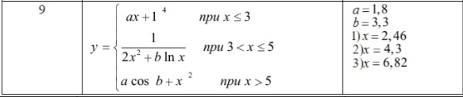
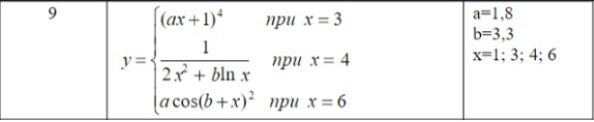

Изучение функций ввода-вывода данных, программирование вычисления значения выражения
Реализовать линейный вычислительный процесс и самостоятельно решить задачу в соответствии с индивидуальным вариантом
Отчет должен содержать титульный лист, задание, блок-схему алгоритма решения задачи, текст программы с комментариями, тесты
Даны два неотрицательных числа a и b. Найти их среднее геометрическое, то есть квадратный корень из их произведения
Дано трехзначное число. Используя одну операцию деления нацело, вывести первую цифру данного числа (сотни)
Изучение разветвляющихся алгоритмов, операторов выбора, программирование разветвляющегося вычислительного процесса
Реализовать разветвляющийся вычислительный процесс. Самостоятельно решить задачи в соответствии с индивидуальным вариантом
Отчет должен содержать титульный лист, задание, блок-схему алгоритма решения задачи текст программы с комментариями, тесты
Во всех заданиях данной группы требуется вывести текст «TRUE», если приведенное высказывание для предложенных исходных данных является истинным, и текст «FALSE» в противном случае. Все числа, для которых указано количество цифр (двузначное число, трехзначное число и т. д.), считаются целыми положительными
Даны два целых числа: A, B. Проверить истинность высказывания: «Хотя бы одно из чисел A и B нечетное»
Даны две переменные вещественного типа: A, B. Перераспределить значения данных переменных так, чтобы в A оказалось меньшее из значений, а в B — большее. Вывести новые значения переменных A и B.


Изучение циклических алгоритмов, операторов цикла, программирование циклического вычислительного процесса
Реализовать циклический вычислительный процесс. Самостоятельно решить задачи в соответствии с индивидуальным вариантом
Отчет должен содержать титульный лист, задание, блок-схему алгоритма решения задачи текст программы с комментариями, тесты
Во всех заданиях данной группы требуется вывести текст «TRUE», если приведенное высказывание для предложенных исходных данных является истинным, и текст «FALSE» в противном случае. Все числа, для которых указано количество цифр (двузначное число, трехзначное число и т. д.), считаются целыми положительными
Дано целое число N и набор из N целых чисел. Если в наборе имеются положительные числа, то вывести TRUE; в противном случае вывести FALSE
От А до В и наоборот, если А меньше В и В меньше А, соответственно
Даны два целых числа A и B (A